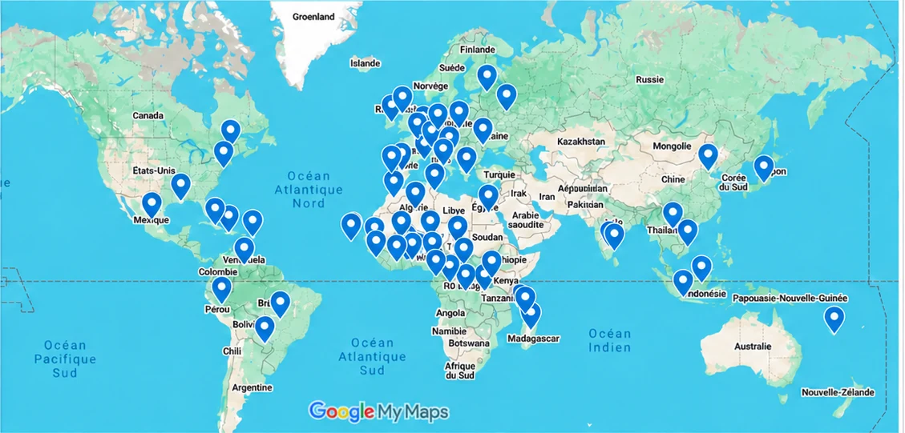
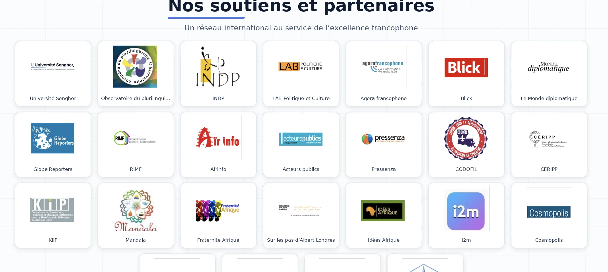

Coordinateurs pays
Dans chaque pays, les coordinateurs géographiques contribuent au dialogue en partageant les regards, les expériences et les analyses de leurs territoires.
Voir le réseau →I-Dialogos, un espace transnational de dialogue pour comprendre les mutations du monde
Des idées, des analyses et des propositions portées par notre réseau.
Rédigez, classez et publiez les articles d’I-Dialogos. Vos contenus sont enregistrés sur cet appareil.
I-Dialogos croise les regards et les expertises sur les mutations du monde.
Présents sur tous les continents, les abonnés, correspondants et partenaires d’I-Dialogos font vivre un dialogue transnational, nourri par la diversité de leurs parcours, de leurs expériences et de leurs analyses. Fondé sur l’écoute, le respect des opinions différentes et la valorisation des expertises de chacun, ce réseau constitue le principal atout d’I-Dialogos.

Présentation en déroulé et clic par pays des coordinateurs I-Dialogos / I-Dialogos Network Coordinators in each country
I-Dialogos entend contribuer à un vrai dialogue transnational, ouvert et pluraliste sur les grands enjeux géopolitiques contemporains, en croisant les regards, les expériences et les expertises issus de différents pays et cultures.
L’exigence de dialogue fait la force de la diplomatie, quand elle est subtile et à l’écoute, à la différence des approches strictement militaires, généralement limitées dans le temps et dont l’actualité souligne quotidiennement les limites.
Voir plus sur I-DialogosL’ignorance mène à la peur, la peur mène à la haine et la haine conduit à la violence. Voilà l’équation.
— AverroèsLes Notes d’I-Dialogos rassemblent des travaux, analyses et propositions consacrés à nos thématiques prioritaires : démocraties, médias, francophonie, santé, eau et environnement, relations internationales…
Voir les NotesUne organisation internationale au service du dialogue transnational.
Dans chaque pays, les coordinateurs géographiques contribuent au dialogue en partageant les regards, les expériences et les analyses de leurs territoires.
Voir le réseau →Le Comité de pilotage réunit des membres issus de plusieurs pays et continents. Il est l’instance de gouvernance par délégation de l’Assemblée générale.
Découvrir l’équipe →Instance consultative internationale, le Comité scientifique éclaire les orientations d’I-Dialogos et formule des propositions sur les priorités de réflexion.
En savoir plus →Première femme élue dans une région du Nord-Mali, Oumou Sall Seck a reçu plusieurs distinctions internationales pour son engagement en faveur des droits humains et de la paix. Cofondatrice et ancienne présidente d’I-Dialogos, elle est ministre de l’Entrepreneuriat national, de l’Emploi et de la Formation professionnelle.
Découvrir son parcours →I-Dialogos réunit des experts de premier plan issus de tous milieux professionnels et universitaires. Leurs recherches, recommandations et analyses croisent un large éventail de questions géopolitiques et de priorités retenues chaque année en Assemblée générale.
Un réseau international au service de l’excellence francophone.

Léopold Sédar Senghor, poète et penseur de la rencontre entre les cultures fondée sur le dialogue.
François Jullien, philosophe du dialogue entre les pensées européenne et chinoise.
Voir plus →